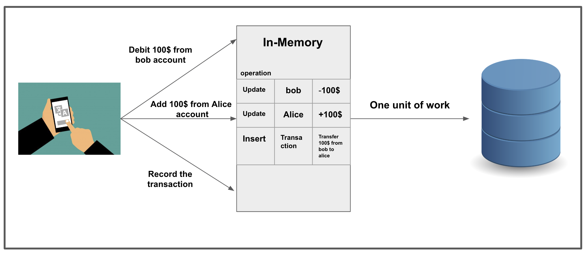
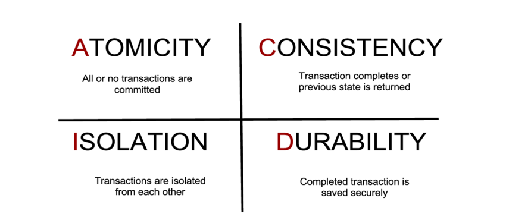
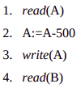
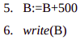

A. Pengertian Transaksi
Transaksi adalah unit eksekusi program yang mengakses dan dapat memperbarui berbagai item data. Biasanya, transaksi dimulai oleh program pengguna yang ditulis dalam bahasa manipulasi data tingkat tinggi (biasanya SQL), atau bahasa pemrograman (misalnya, C ++ atau Java), dengan akses database yang disematkan di JDBC atau ODBC. Transaksi dibatasi oleh pernyataan (atau pemanggilan fungsi) dari form memulai transaksi dan mengakhiri transaksi (begin transaction and end transaction). Transaksi terdiri dari semua operasi yang dijalankan antara transaksi awal dan transaksi akhir.
Pada sistem pemrosesan transaksi biasanya memperbolehkan banyak transaksi yang di proses secara bersamaan. Diperbolehkannya banyak transaksi di proses secara bersamaan, akan dapat menimbulkan banyak hal yang dapat mempengaruhi konsistensi data pada basis data. Pemrosesan transaksi secara bersamaan bisa dilakukan secara serial yaitu menyelesaikan satu transaksi baru di ikuti dengan transaksi yang lain. Tetapi pemrosesan tersebut juga bisa dilakukan dengan diperbolehkannya proses secara interleave untuk memaksimalkan kerja CPU dan memperkecil waktu tunggu antar transaksi.
Sistem basis data harus dapat mengatur interaksi dari transaksi – transaksi yang di proses secara bersamaan tersebut untuk dapat menjamin konsistensi dari basis data. Dimana untuk Transaksi T1 dan T2 yang diproses secara bersamaan, kita tidak bisa menjamin bahwa T1 di proses terlebih dahulu baru di ikuti dengan T2, sehingga diperlukan schedule yang akan mengatur urutan dari sekumpulan aksi yang akan di proses.
Transaksi adalah suatu unit dari eksekusi program yang memungkinkan untuk mengakses dan melakukan perubahan pada beberapa data item. Suatu sistem basis data harus memastikan eksekuasi transaksi yang sesuai – apakah keseluruhan transaksi dieksekusi atau tidak satupun operasi di dalamnya yang dieksekusi. Lebih jelasnya, basis data harus mengelola eksekusi transaksi yang terjadi secara berbarengan sehingga tidak terjadi ketidak konsistenan data pada basis data.
Transaction mengakses data menggunakan dua operasi, yaitu :
- a. read (x)
- b. write (x)
Mentransfer data item X dari basis data ke local buffer yang merupakan bagian dari transaksi yang melakukan operasi read.
Mentransfer data item X dari local buffer pada transaksi yang melakukan penulisan data kembali ke basis data.
B. ACID Property

Terdapat empat sifat penting dalam transaksi yang harus dijamin oleh
DBMS dalam menjaga
agar data tetap konsisten, yaitu :
- Atomicity. Baik semua operasi transaksi tercermin dengan benar di database, atau tidak ada sama sekali.
- Consistency. Eksekusi transaksi dalam isolasi (yaitu, tanpa transaksi lain yang dijalankan secara bersamaan) menjaga konsistensi database.
- Isolation. Meskipun beberapa transaksi dapat dieksekusi secara bersamaan, sistem menjamin bahwa, untuk setiap pasangan transaksi Ti dan Tj, tampaknya Tj menyelesaikan eksekusi sebelum Ti dimulai atau Tj memulai eksekusi setelah Ti selesai. Dengan demikian, setiap transaksi tidak mengetahui transaksi lain yang dijalankan secara bersamaan dalam sistem.
- Durability. Setelah transaksi berhasil diselesaikan, perubahan yang telah dibuat ke database tetap ada, bahkan jika ada kegagalan sistem.
C. Contoh Kasus 1
Contoh, untuk proses transfer uang dari account A ke account B sebesar Rp. 500 dengan Urutan aksi sebagai berikut :

Dimana jika ditinjau dari ACID properties maka :
Atomicity :
Jika transaksi gagal setelah langkah 3 dan sebelum langkah 6, maka
sistem harus memastikan tidak ada aksi yang mempengaruhi basis
data, jika tidak maka akan menyebabkan ke tidak konsistenan data
pada basis data.
Consistency :
Jumlah dari A dan B tidak berubah dengan dijalankannya proses
transaksi tersebut.
Isolation :
antara langkah 3-6, tidak boleh ada transaksi lain yang malakukan
peng-update-an pada sebagian data yang sedang diupdate pada
database, atau jika ada maka akan menghasilkan ke tidak
konsistenan (A + B akan kurang atau lebih dari yang seharusnya)
Durability :
Ketika user memberitahukan bahwa transaksi selesai, maka update
ke basis data oleh transaksi harus dilakukan meskipun ada
kegagalan.
D. CONTOH KASUS 2
Misal ada 2 transaksi transfer antara rek A, dan rek B yang terjadi secara bersamaan:
T1 : Transfer A->B senilai 500- - Kurangi saldo A 500
- - Tambah saldo B 500
- - Kurangi saldo B 1000
- - Tambah saldo A 1000
Bayangkan jika transaksi tersebut terjadi secara bersamaan dan di proses tanpa isolasi sehingga akan menjadi:
- - Kurangi saldo A 500
- - Tambah saldo B 500
- - Kurangi saldo B 1000
- - Tambah saldo A 1000